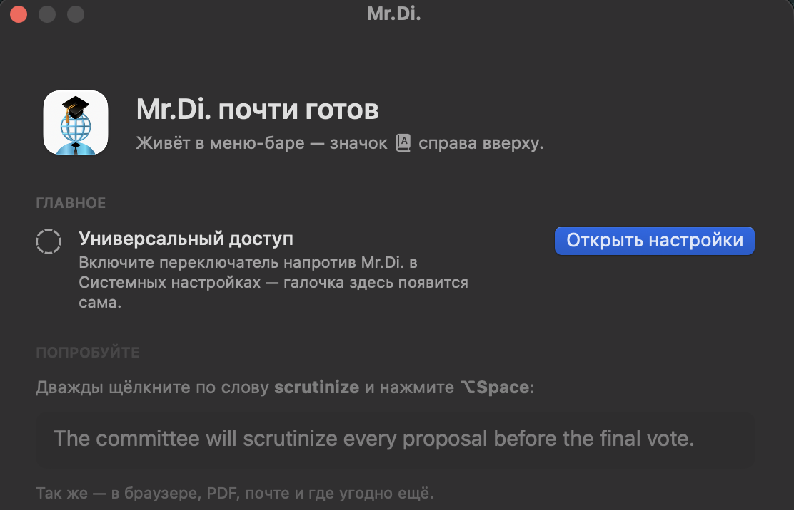

Mr.Di.
Встретили незнакомое английское слово — выделите его и нажмите ⌥ Space. Перевод появится рядом с курсором, а видео продолжит играть.
Установка за минуту
-
Откройте Терминал
Нажмите ⌘ Space, наберите «Терминал» и нажмите Enter.
-
Вставьте команду и нажмите Enter
curl -fsSL https://raw.githubusercontent.com/CryptoNerf/mr.di/main/scripts/install.sh | bashВ Терминале — ⌘ V, затем Enter. Приложение скачается и запустится само.
-
Разрешите доступ
Откроется окно Mr.Di. Нажмите «Разрешить» и в Системных настройках включите переключатель напротив Mr.Di. — галочка в окне появится сама.

Готово. Mr.Di. живёт в меню-баре справа вверху и сам запускается после перезагрузки — больше ничего делать не нужно.
Как пользоваться
| ⌥ Space | Перевести выделенное слово или фразу — в браузере, PDF, почте, где угодно |
| ⌥ S | Обвести область экрана: текст с видео, картинки или игры распознаётся с пикселей |
| ⌥ R | Переснять ту же область — для субтитров: обвели один раз, дальше только эта клавиша |
| ⌥ V | Сказать слово в микрофон, если не знаете, как оно пишется |
| ⌥ A | Показать, что прозвучало за последние 15 секунд, — и нажать на незнакомое слово |
| ⏎ | Пока открыта подсказка — сохранить слово в личный словарь с повторениями |
| ⌥ D | Открыть словарь |
Вопросы
Почему через Терминал, а не обычной загрузкой?
Приложение не заверено у Apple: это стоит 99 $ в год. Файл, скачанный браузером, macOS помечает как «из интернета» и потом говорит, что приложение «повреждено». Оно не повреждено, но обойти это мышью сложно. Команда в Терминале скачивает файл так, что этой пометки нет.
Это безопасно?
Команда скачивает последнюю версию с GitHub, кладёт её в «Программы» и запускает — больше ничего. Скрипт короткий, его можно прочитать: install.sh. Весь код приложения открыт. Перевод и распознавание работают на вашем компьютере — текст никуда не отправляется.
Как обновить?
Выполните ту же команду ещё раз — она поставит новую версию поверх старой. Словарь сохранится.
Можно без Терминала?
Скачайте .dmg со страницы релизов и перетащите Mr.Di. в «Программы». При первом запуске macOS откажет — тогда откройте Системные настройки → Конфиденциальность и безопасность, пролистайте вниз и нажмите «Всё равно открыть».
Как удалить?
Выйдите из Mr.Di. через меню-бар и удалите его из «Программ». Чтобы стереть и словарь,
выполните в Терминале: rm -rf ~/Library/Application\ Support/MrDi